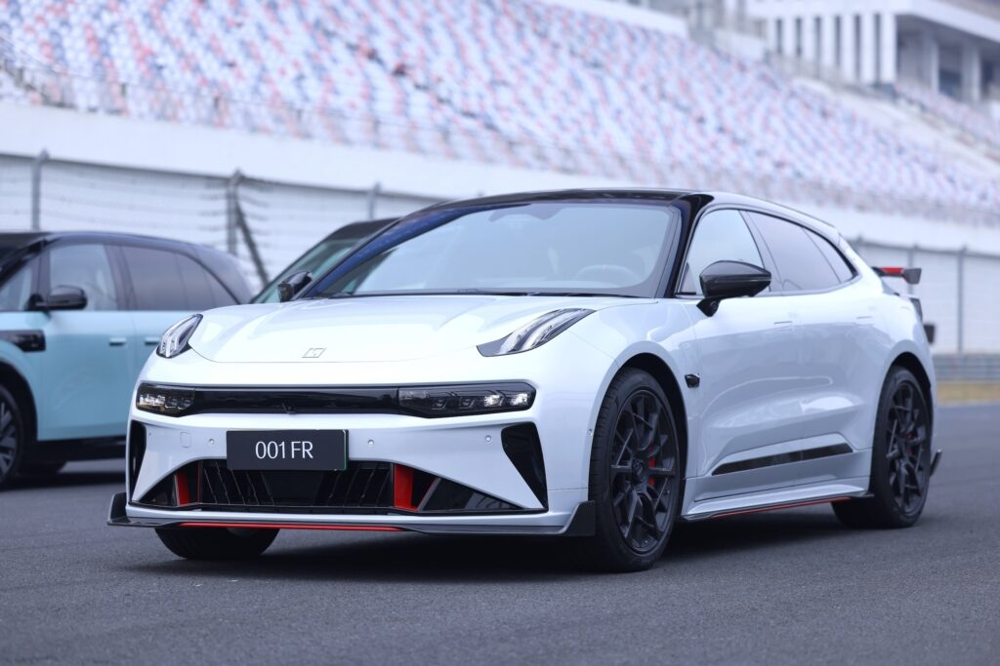

Основные технические характеристики Zeekr 001 FR
- Тип кузова: Хэтчбек (5 дверей, 5 мест)
- Электродвигатель: Четыре мотора, полный привод (930 кВт / 1280 Н·м)
- Разгон до 60 км/ч: 2.02 секунды
- Максимальная скорость: 280 км/ч
- Батарея: Литий-ионная (NCM), емкость 100 кВт·ч
- Запас хода (CLTC): 550 км на одном заряде
- Поддержка быстрой зарядки: Да (жидкостное охлаждение)
- Автопилот: Система ZEEKR AD (уровень L2)
Дизайн и интерьер Zeekr 001 FR
Zeekr 001 FR сочетает в себе элегантный спортивный стиль и премиальные материалы отделки. В салоне используется высококачественная Alcantara, а также предусмотрены сиденья с функциями подогрева, вентиляции и массажа.
- Экран мультимедиа: Сенсорный LCD-дисплей (15 дюймов)
- Панель приборов: Цифровой дисплей (13 дюймов)
- Аудиосистема: Yamaha с 28 динамиками
- Материалы отделки: Alcantara, вставки из розового золота

Интеллектуальные технологии и безопасность
Автомобиль оснащен передовыми системами помощи водителю и безопасности:
- Чип ADAS: Два Nvidia OrinX (508 TOPS)
- Камеры и датчики: 14 камер, 12 ультразвуковых радаров, 2 миллиметровых радара, лидар
- Круиз-контроль: Адаптивный на всех скоростях с функцией автоматического въезда/выезда на рампу
- Система навигации: Amap с поддержкой голосового управления